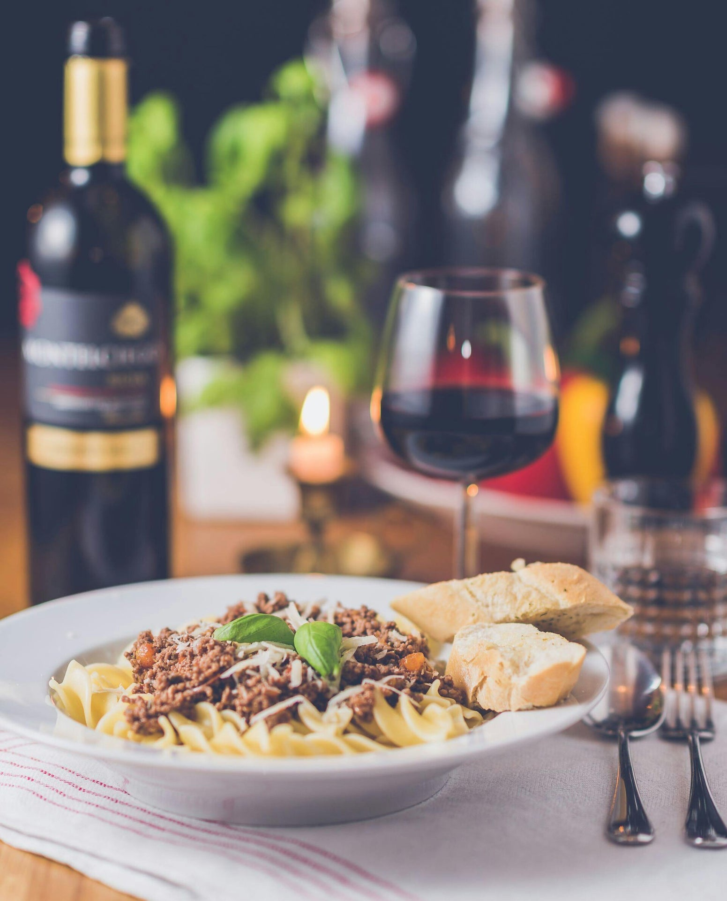
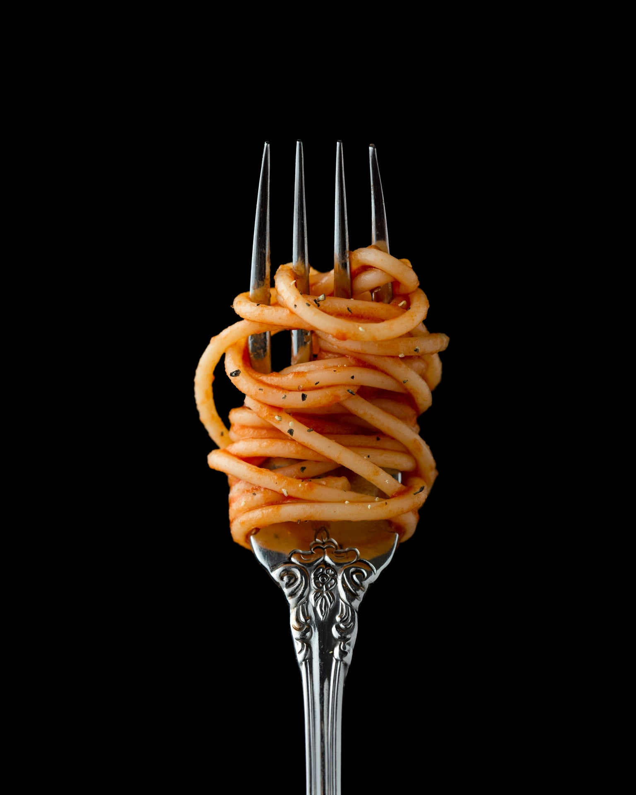
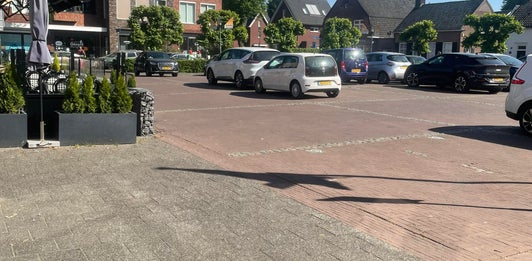

Jack van Gilsplein 29, Bavel
La Locanda
Italiaanse keuken op het plein van Bavel. Pizza, pasta, vlees en vis van Giuseppe en Izabela, aan tafel op het zonnige terras of om mee te nemen.
Woensdag t/m zondag open, maandag en dinsdag gesloten

- Gratis parkeren direct voor de deur
- Zonnig terras op het plein
- Meenemen wo t/m zo, 16:00 tot 21:00
- Kindermenu voor kinderen tot 12 jaar
La carta
De hele kaart, van antipasti tot limoncello. Voorgerechten worden geserveerd met brood, vlees- en visgerechten met friet, mayonaise en salade.
Antipasti freddi Koude voorgerechten, geserveerd met brood
- Burro alle spezie€ 5,00
Huisgemaakte kruidenboter
- Burro alle spezie e tapenade€ 6,50
Huisgemaakte kruidenboter met twee tapenades
- Porzione di olive€ 5,00
Portie olijven
- Insalata mista€ 8,00
Gemengde salade met komkommer, tomaten en olijven
- Insalata caprese€ 12,00
Tomaten, mozzarella, verse basilicum en balsamicocrème
- Antipasto misto€ 15,00
Verschillende Italiaanse vleeswaren en kaas
- Carpaccio di carne€ 15,00
Dun gesneden ossenhaas met Parmezaanse kaas, rucola, pijnboompitten en balsamicocrème
- Vitello tonnato€ 15,00
Dungesneden kalfsvlees met tonijnsaus
Antipasti caldi Warme voorgerechten, geserveerd met brood
- Bruschette classiche€ 8,00
Geroosterd brood met verse tomaten, knoflook en basilicum
- Melanzane alla parmigiana€ 12,00
Aubergine uit de oven met mozzarella en tomatensaus
- Calamari fritti€ 13,00
Gefrituurde inktvis
- Gamberetti piccanti€ 15,00
Gepelde garnalen in een pikante tomatensaus
- Gamberetti all'aglio€ 15,00
Gepelde garnalen in knoflookboter
Zuppe Soepen
- Zuppa di pomodoro€ 8,00
Vers gemaakte tomatensoep
- Minestrone€ 8,00
Vers gemaakte Italiaanse groentesoep
- Zuppa di pesce€ 11,00
Rijk gevulde Italiaanse vissoep
Pasta Pastagerechten met penne of spaghetti
- Aglio, olio e peperoncino€ 11,50
Olie, knoflook, Italiaanse peper
- Bolognese€ 12,50
Met tomaten-gehaktsaus
- Arrabbiata€ 12,50
Met pikante tomatensaus
- Carbonara€ 13,50
Met spekjes en ei in roomsaus
- Pesto€ 15,00
Met basilicum, pijnboompitjes en Parmezaanse kaas
- Marinara€ 17,00
Met verschillende zeevruchten in een lichte tomatensaus
- La Locanda€ 17,50
Met garnalen, verse knoflook en Italiaanse peper
Pasta ripiena Gevulde pasta's
- Tortellini alla panna€ 16,00
Deegkussentjes gevuld met rundgehakt in saus van room en ham
- Ravioloni funghi e tartufo€ 18,50
Met salie en boter
Pasta e verdura al forno Deeg- en groentegerechten uit de oven
- Lasagne di carne€ 16,50
Verse huisgemaakte lasagne met rundgehakt en kaas-tomaten-roomsaus
- Cannelloni di carne€ 15,50
Gevulde deegrollen met gehakt, tomaten en kaas
- Cannelloni ricotta e spinaci€ 15,50
Gevulde deegrollen met spinazie, kaas en tomatenroomsaus
- Pasticcio di carne€ 16,50
Lasagne, cannelloni en tortellini in kaas-tomaten-roomsaus
- Melanzane alla parmigiana€ 17,00
Aubergine uit de oven met mozzarella, Parmezaanse kaas en tomatensaus
Pizze Verschillende pizza's
- Margherita€ 12,00
Tomatensaus en mozzarella
- Prosciutto€ 13,00
Tomatensaus, mozzarella en ham
- Salami dolce o piccante€ 13,00
Tomatensaus, mozzarella en salami of pittige salami
- Funghi€ 13,00
Tomatensaus, mozzarella en verse champignons
- Prosciutto e funghi€ 14,00
Tomatensaus, mozzarella, ham en verse champignons
- Siciliana€ 14,00
Tomatensaus, mozzarella, kappertjes, olijven en ansjovis
- Bianca€ 15,00
Mozzarella, verse tomaten, rucola en grana
- Al tonno€ 15,00
Tomatensaus, mozzarella, tonijn en uien
- Frutti di mare€ 16,50
Tomatensaus, mozzarella en verschillende zeevruchten
- Quattro stagioni€ 16,50
Tomatensaus, mozzarella, ham, salami, champignons en paprika
- Parma€ 17,00
Tomatensaus, mozzarella, parmaham, rucola en grana
- Hawaï€ 17,00
Tomatensaus, mozzarella, ham en ananas
- Calzone€ 17,50
Gevulde pizza met tomatensaus, mozzarella, ham, salami, champignons, paprika en uien, overgoten met bolognesesaus
Carne Vleesgerechten met friet, mayonaise en salade
- Saltimbocca alla romana€ 21,50
Kipfilet met salie en parmaham in wittewijnsaus
- Filetto di pollo alla pizzaiola€ 23,50
Kipfilet met kappertjes, olijven en origano in tomatensaus
- Straccetti rucola e parmigiano€ 25,00
Ossenhaaspuntjes met rucola, Parmezaanse kaas en balsamico
- Ossobuco milanese€ 25,50
Kalfsschenkel met groenten in tomatenwijnsaus, geserveerd met spaghetti
- Medaglioni alla boscaiola€ 26,00
Ossenhaasmedaillons met uien en paprika, afgeblust met cognac
- Bistecca alla griglia€ 27,50
Steak van de grill
Pesce Visgerechten met friet, mayonaise en salade
- Calamari fritti€ 23,50
Gefrituurde inktvis
- Filetti di sogliola con salmone€ 24,50
Tongfilets gevuld met zalm in wittewijn-vissaus
- Fritto misto€ 26,50
Gefrituurde inktvis en garnalen
- Scampi al forno€ 26,50
Grote garnalen uit de oven met knoflook en boter
- Filetti di merluzzo alla mediterranea€ 26,50
Kabeljauw met ansjovis, knoflook, kappertjes en olijven in verse tomatensaus
Per i bambini Voor kinderen tot 12 jaar
- Margherita€ 7,00
Kleine pizza met tomatensaus en kaas
- Salami o prosciutto€ 8,00
Kleine pizza met tomatensaus, kaas en salami of ham
- Hawaï€ 8,00
Kleine pizza met tomatensaus, kaas, ham en ananas
- Spaghetti o penne€ 8,00
Met tomatensaus of bolognesesaus
- Pollo bambino€ 12,00
Kipfilet met friet en mayonaise
Dolci Toetjes
- Gelato bambino€ 5,50
Kinderijsje
- Torta al limone€ 7,50
Citroentaart
- Tartufo€ 7,50
IJstruffel
- Dama bianca€ 7,50
Vanille-ijs met chocoladesaus en slagroom
- Tiramisu€ 8,00
Italiaanse vers gemaakte specialiteit
- Cannolo siciliano€ 8,50
Siciliaans gebakje met ricotta en pistache
Caffè & tè Koffie en thee
- Caffè, espresso€ 3,00
- Espresso doppio€ 4,00
- Cappuccino€ 3,50
- Latte macchiato€ 3,75
- Caffè irlandese€ 8,00
- Caffè italiano€ 8,00
Met amaretto of sambuca
- Thee€ 3,00
Verschillende smaken
- Verse munt- of gemberthee€ 3,70
- Warme chocomel€ 3,70
Met slagroom € 4,20
Aperitivi Aperitieven
- Crodino 0,0%€ 4,00
- Martini bianco€ 4,50
- Martini rosso€ 4,50
- Campari€ 5,00
- Porto€ 5,00
Cocktails
- Aperol Spritz€ 7,50
- Limoncello Spritz€ 8,00
- Bacardi Cola€ 8,50
- Gin Tonic€ 8,50
- Negroni€ 8,50
Bibite Frisdranken
- San Pellegrino / Acqua Panna€ 6,50
0,75 l
- Spa blauw, Spa rood€ 3,30
- Coca-Cola, Coca-Cola Zero€ 3,50
- Fanta Orange, Cassis, Sprite€ 3,50
- Royal Bliss Tonic, Bitter Lemon€ 3,50
- Lipton Ice Tea Sparkling / Green€ 3,50
- Chocomel, Fristi€ 3,50
- Appelsap€ 3,50
Birre Bier
- Tapbier, Brand€ 3,50
- Peroni Nastro Azzurro€ 4,50
- Peroni Nastro Azzurro 0,0%€ 4,50
- Radler lemon 2,0%€ 4,00
- Affligem Blond€ 5,00
- Affligem Dubbel€ 5,00
- Affligem Wit€ 5,00
Vini rossi Rode wijnen (fles; glas waar vermeld)
- Negroamaro€ 24,50
Glas € 4,75
- Bardolino€ 26,00
- Chianti classico€ 28,00
- Salice salentino€ 32,00
- Barolo€ 59,00
Vini bianchi Witte wijnen
- Chardonnay€ 24,50
Glas € 4,75
- Prosecco€ 26,00
Glas € 5,50
- Falanghina€ 28,00
- Pinot grigio€ 32,00
Vino rosato Rosé wijnen
- Il medaglione rosato€ 24,00
Glas € 4,75
- Salice salentino rosato€ 28,00
- Bardolino chiaretto€ 28,00
- Lambrusco rosso / bianco€ 24,50
Glas € 4,75
Liquori
- Limoncello€ 5,50
- Sambuca€ 5,50
- Amaretto€ 5,50
- Tia Maria€ 5,50
- Baileys€ 5,50
- Arancello€ 5,50
- Sgroppino€ 5,50
Amari
- Amaro del Capo€ 5,00
- Ramazzotti€ 5,00
- Montenegro€ 5,00
- Averna€ 5,00
Distillati
- Vecchia Romagna€ 6,00
- Jack Daniel's€ 6,50
- Johnnie Walker Red€ 6,50
- Courvoisier VS€ 7,50

Giuseppe en Izabela
Bijna veertig jaar stond Giuseppe Coccia in de keuken van zijn eigen restaurant Da Attilio, op de Grote Markt van Breda. Nu koken hij en Izabela Klapuch in Bavel.
Giuseppe kwam als twintigjarige uit een dorpje in Zuid-Italië naar Nederland. Hij is kok van beroep. Izabela woont al dertig jaar in Nederland en werkte vele jaren met veel toewijding bij Da Attilio, waar zij haar ervaring opdeed.
Met La Locanda beginnen zij samen een nieuw avontuur. Met hun ervaring, enthousiasme en passie voor de Italiaanse keuken en cultuur willen ze er een gezellig familierestaurant van maken.
Wat gasten schrijven
Al meerdere keren heerlijk gegeten, pasta, pizza, ossenhaas, tiramisu, tarte limone, alles vers en top van smaak, in een fijne relaxte ambiance.
Wat hebben we hier onwijs lekker gegeten, super-vriendelijke bediening. We konden buiten zitten met gezellige Italiaanse muziek op de achtergrond.
Bij La Locanda kun je zeker een lekkere pizza eten. Ik kom daar ook voor hun heerlijke tiramisu, koffie of een glasje wijn.
Reacties van gasten, geplaatst op de website van La Locanda.

Liever thuis eten?
U kunt bij La Locanda ook bestellen om mee te nemen. Bel uw bestelling door en haal hem op aan het Jack van Gilsplein, met gratis parkeren voor de deur.
- Meenemen
- Woensdag t/m zondag, 16:00 tot 21:00
- Bestellen
- 06 44 27 01 83
Aan tafel eten
Reserveer telefonisch via 06 44 27 01 83 of laat hiernaast uw gegevens achter.
Wilt u op de dag zelf komen eten? Neem dan graag telefonisch contact op. Met meer dan acht personen? Dan nemen wij contact met u op om te overleggen.
- Open
- Woensdag t/m zondag
- Gesloten
- Maandag en dinsdag
Midden in Bavel
La Locanda ligt in het hart van Bavel, aan een gezellig plein met een ruim, zonnig terras. Er is ruime, gratis parkeergelegenheid direct voor de deur: u stapt zo vanuit uw auto naar binnen.
Jack van Gilsplein 294854 CB Bavel
